# Preface This guide is open source and maintained by Argonator, of the ArQmA community. If you have suggestions or wish to contribute to the development of this guide, feel free to open Pull Requests or Issues on the GitHub repository where this document is maintained: github.com/mechanator/ArQmA-GUI-wallet-guide.
This document will be localized into several languages. You can find all available translations in the dedicated section on GitHub.
Windows Preparation
If you are on Windows:
Make sure that your antivirus does not block the program. Antivirus program arbitrarily flag most blockchain applications as virii. Add and exeception to your installed antiirus program before proceeding.
A miner is included in the ArQmA GUI software and, as a result, most anti virus software flags the ArQmA GUI files as malware and subsequently quarantines them. Fortunately, however, there's a fairly trivial work around you can use. That is:
Create a new directory / folder.
Open your AV software.
Add an exception for the newly created directory / folder. Put differently, you have to whitelist the newly created directory / folder.
Extract the .zip file (in case of Windows) or the .tar.bz2 file (in case of Linux or Mac OS X) to the whitelisted directory / folder.
Note: if you're using Windows and did not install custom anti virus software, Windows Defender is, most likely, acting as active anti virus software.
The first time you start the wallet you must give permission to connect to the network via a pop-up. Check the appropriate boxes and click Allow access.
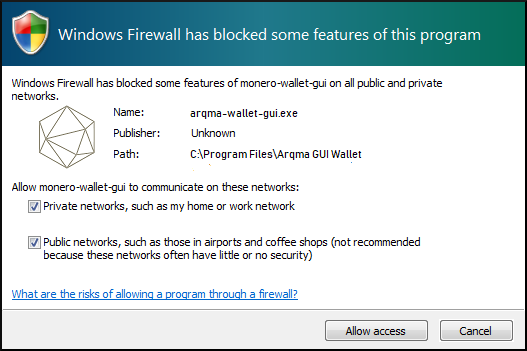
Shortcuts
Some shortcuts are available to make the user experience with the GUI easier:
On all operating systems:
Press Ctrl to view each page shortcut. Press ctrl+"shortcut" to go to that page
On Linux/Windows: ctrl + tab -> go to the next page ctrl + shift + tab -> go to the previous page
On macOS: cmd + tab -> go to the next page cmd + shift + tab -> go to the previous page
Welcome
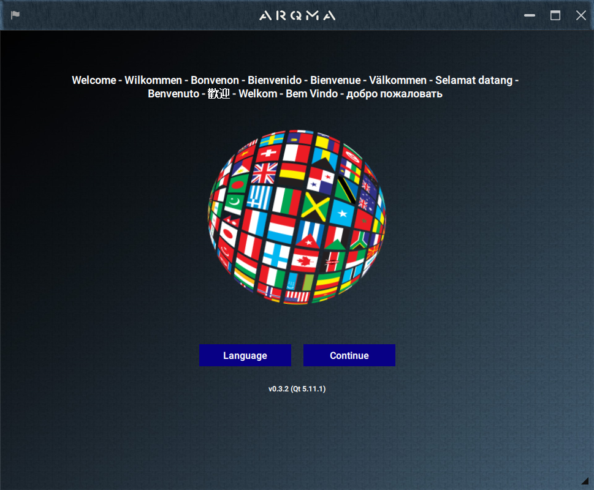
Extract the package and click on ArQmA-wallet-gui.
Welcome to ArQmA GUI Wallet.
Language: Click here to see a list of available languages.
Continue: If you are satisfied with the current language, continue to the next screen.
Choose a Language
You'll see a list of available languages, click on the one of your choice to change it and continue from the welcome screen. Note: You will be able to change the language later by clicking on the flag in the upper-left corner.
Close: Cancel and return to the previous screen.
Choose wallet mode
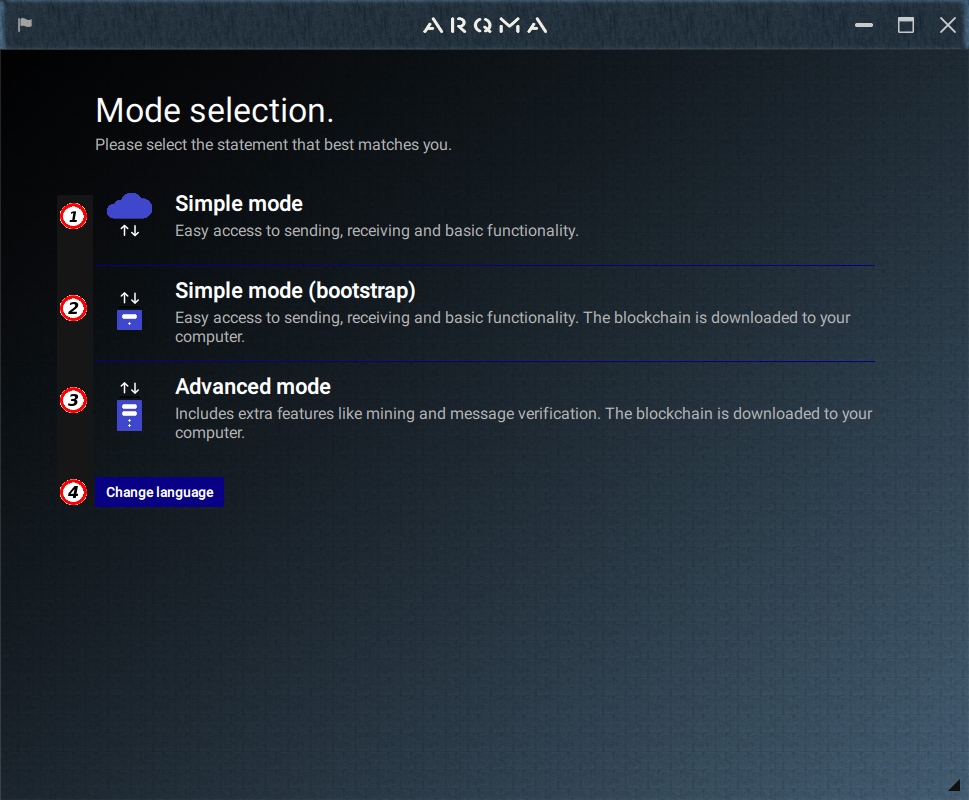
This page lets you choose the mode that best suits your accessibility and privacy needs. Note: Stagenet and Testnnet only supports Advanced mode.
Simple mode: This mode will connect your wallet to a remote node. Please note that remote nodes may weaken your privacy. Choose this if you have low privacy requirement, need to quickly access the ArQmA network, and only intend to manage small amount of ArQmA.
Simple mode (bootstrap): This mode is similar to the previous one, as it will connect you to a remote node, but will download the blockchain to your local drive in the background. As soon as you have a local copy of the entire blockchain, you will be connected to your local node. It allows you to start using ArQmA immediately and have a fallback option if your local blockchain needs to sync new blocks while offering the privacy benefits of a full node when fully synced.
Advanced mode: Using this mode will let you run a full node, which downloads and maintains an entire copy of the blockchain. Your wallet will not be usable until your local copy of the blockchain is fully synchronized. Choose this mode if the maximum privacy matters to you.
Change language: This will let you choose the language from the startup page (again).
About the Simple/Bootstrap mode
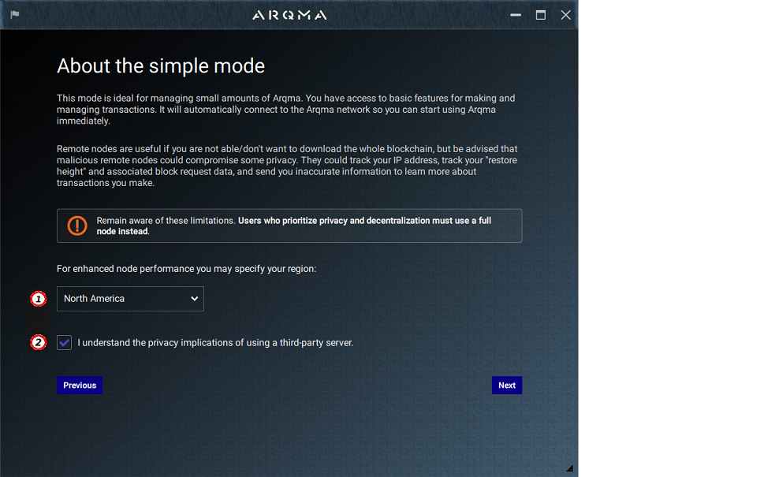
Upon choosing simple mode or bootstrap mode, an acknowledgement page will be shown, explaining the features, behavior, and privacy constraints of the mode.
Please carefully read those informations before accepting the implications of this mode and proceed to the next step.
You must understand the inherent risks of using a remote node for your privacy, and you should avoid using it with large amounts of money. If you connect to a malicious remote node, it could track your IP address, your "restore height" and associated block request data, and send you inaccurate information to learn more about transactions you make.
Region: Choose a region to pick up the remote nodes from. The closer the node is, the better the wallet performance will be.
Acknowledgement: Check This box if you have fully understood the privacy implications of a remote node and agree to weaken your privacy by using it.
Create a Wallet
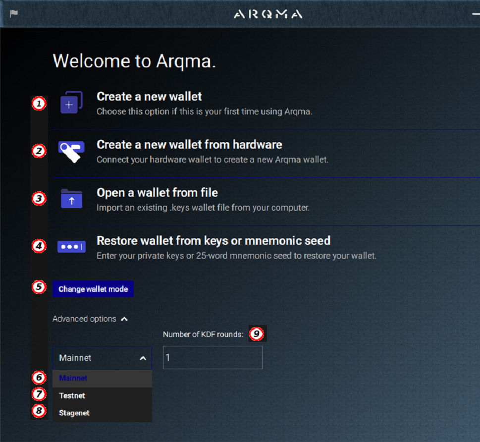
On this page you can choose how to connect to the wallet and to the network:
Create a new wallet: Start the procedure to make a new wallet. Choose this option if this is your first time using ArQmA.
Create new wallet from hardware: Create a new wallet from an hardware device (like Ledger or Trezor)
Open a wallet from file: Choose this option to select a pre-existing wallet from your files with the extension .keys.
Restore wallet from keys or mnemonic seed: Click here if you want to recover a pre-existing wallet using the mnemonic seed or the keys.
Change wallet mode: Click here to switch between modes and choose the wallet mode that best fits your needs.
Mainnet:Advanced: Select this from the dropdown list to use the main ArQmA network
Testnet:Advanced: Select this from the dropdown list if you would like to use a development network instead of the main network. Testnet is designed to let developers test new features that are not available on Mainnet or Stagenet.
Stagenet:Advanced: Select this from the dropdown list if you would like to use a network for staging instead of the main network. Stagenet mimics the features of Mainnet and is designed to let end users test ArQmA without the risk of losing funds.
Number of KDF rounds:Advanced: Adjust the number of Key Derivation Function rounds in order to enhance the overall security of the generated keys. Any random large number will increase the security.
Create new wallet
Here you can create a new wallet:
Wallet name: Give a name for your wallet (in this example testname is used).
Mnemonic seed: Write down your [mnemonic seed] and keep it safe. Your seed is the master key of your wallet, you can use it to recover your funds.
Wallet location: Select the destination folder of the wallet.
Remember, there is no recovery possible for lost seeds or lost private view/spendkeys. Safeguard it like it was cash. ### Add a password
Add a strong password to protect your wallet. If you lose your password, then only your mnemonic seed can recover your wallet.
Daemon settings (Advanced mode)
Here you can choose if you are going to run a full node or use a remote one:
Start node in background: Check this box to run a full node and begin blockchain sync.
Blockchain location (optional): To store the blockchain somewhere other than default, enter that location here.
Bootstrap node: To use a bootstrap node enter the host and port. A bootstrap node allows you to use your wallet while you are downloading the blockchain by connecting to a remote node. For a list of available remote nodes and info about them, check the About remote nodes section of this guide.
Connect to a remote node: Check this box if you want to use only a remote node without downloading the blockchain. You will need to put the host and port of the remote node after checking the box.
Run a full node
Upon completion of the setup you will be prompted to the settings menu, but first you will see a window like this pop up:
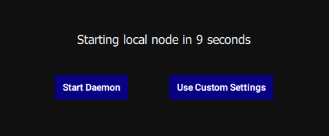
If you want to create a normal wallet using your personal full node, you don't need to do anything, let the countdown finish, then wait until your node is fully synced.
If you need some special settings, like setting up a view-only wallet or adding the blockchain manually, go to Settings.
Create new wallet from hardware
Create the wallet
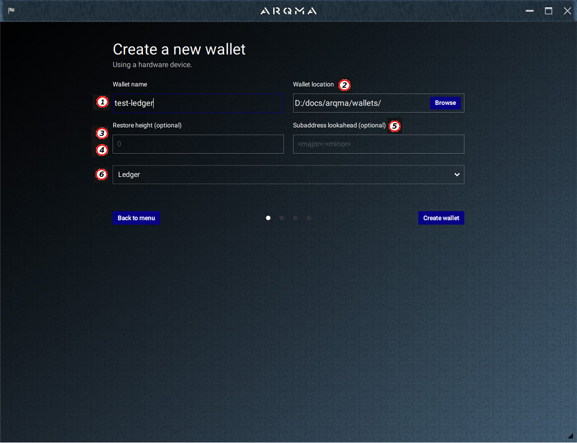
Wallet name: Give a name for your wallet (in this example ledger-test is used).
Wallet location: Select the destination folder of the wallet.
Create a new wallet from device: Select this option if this is the first time you use a hardware wallet.
Restore a wallet from device: Choose this option if you already had a hardware wallet and want to restore it. Creation Date or Restore height (optional):Restore only: If you know the date or block height that your wallet was created at, you can specify it here so the wallet doesn't have to scan the entire blockchain looking for your funds. For example, if your first transaction was included on 2017-07-08 in block 1350000, you should put the previous day date (e.g. 2017-07-06) or a slightly lower height (e.g. 1330000) so the wallet will start scanning from there, saving you some time. More information about restore height on StackExchange.
Subaddress lookahead (optional): pregenerate a number of accounts with a number of subaddresses each.
Device name: Select the hardware wallet you want to use.
Step by step guide on how to generate a Ledger wallet with the ArQmA GUI for all operating systems (StackExchange):
[How do I generate a Ledger ArQmA wallet with the GUI (ArQmA-wallet-gui)?] This is similar to the ArQmA one here:(https://monero.stackexchange.com/questions/9901/how-do-i-generate-a-ledger-monero-wallet-with-the-gui-monero-wallet-gui)
Add a password
Add a strong password to protect your wallet. If you lose your password, then only your mnemonic seed can recover your wallet. Remember, if you also lose your 25 mnemonic seed, you cannot recover your wallet. There is no further recovery process if you lose both the keys and the mnemonic.
Daemon settings (Advanced mode)
Here you can choose if you are going to run a full node or use a remote one:
Start node in background: Check this box to run a full node and begin blockchain sync.
Blockchain location (optional): To store the blockchain somewhere other than default, enter that location here.
Bootstrap node: To use a bootstrap node enter the host and port. A bootstrap node allows you to use your wallet while you are downloading the blockchain by connecting to a remote node. For a list of available remote nodes and info about them, check the About remote nodes section of this guide.
Connect to a remote node: Check this box if you want to use only a remote node without downloading the blockchain. You will need to put the host and port of the remote node after checking the box.
Run a full node
Upon completion of the setup you will be prompted to the settings menu, but first you will see a window like this pop up:
If you want to create a normal wallet using your personal full node, you don't need to do anything, let the countdown finish, then wait until your node is fully synced.
If you need some special settings, like setting up a view-only wallet or adding the blockchain manually, go to Settings.
Restore wallet from keys or mnemonic seed
Restoring from seed
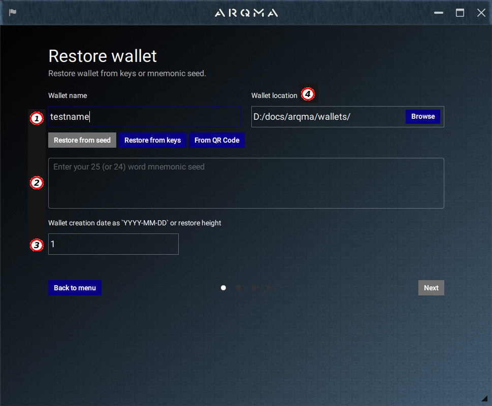
Restoring from your mnemonic seed is the easiest way to recover your wallet. You need to put the following information:
Wallet name: Give a name for your wallet (in this example testname is used).
Mnemonic seed: Paste your seed made of 25 (or 24) words.
Creation Date or Restore height (optional): If you know the date or block height that your wallet was created at, you can specify it here so the wallet doesn't have to scan the entire blockchain looking for your funds. For example, if your first transaction was included on 2018-07-08 in block 1350000, you should put the previous day date (e.g. 2018-07-06) or a slightly lower height (e.g. 1330000) so the wallet will start scanning from there, saving you some time. More information about restore height on StackExchange.
Wallet location: Select the destination folder of the wallet.
Restoring from keys is quite easy and can be extremely useful, especially if you are moving your wallet from an online service like MyArQmA. You need to put the following information:
Wallet name: Give a name for your wallet (in this example testname is used).
Account address: The address of the wallet you are recovering.
View key: Your private view key (needed to be able to check your funds).
Spend key: Your private spend key (needed to spend your funds).
Creation Date or Restore height (optional): If you know the date or block height that your wallet was created at, you can specify it here so the wallet doesn't have to scan the entire blockchain looking for your funds. For example, if your first transaction was included on 2018-07-08 in block 1350000, you should put the previous day date (e.g. 2018-07-06) or a slightly lower height (e.g. 1330000) so the wallet will start scanning from there, saving you some time. More information about restore height on StackExchange.
Wallet location: Select the destination folder of the wallet.
When everything is ready click the right arrow and then the Use ArQmA button.
A detailed guide is available on getArQmA.org: 'Restoring wallet from keys'
Open a wallet from file
After clicking this option a window will pop up. Navigate to your file with the extension .keys, select it and click the right arrow.
ArQmA Account
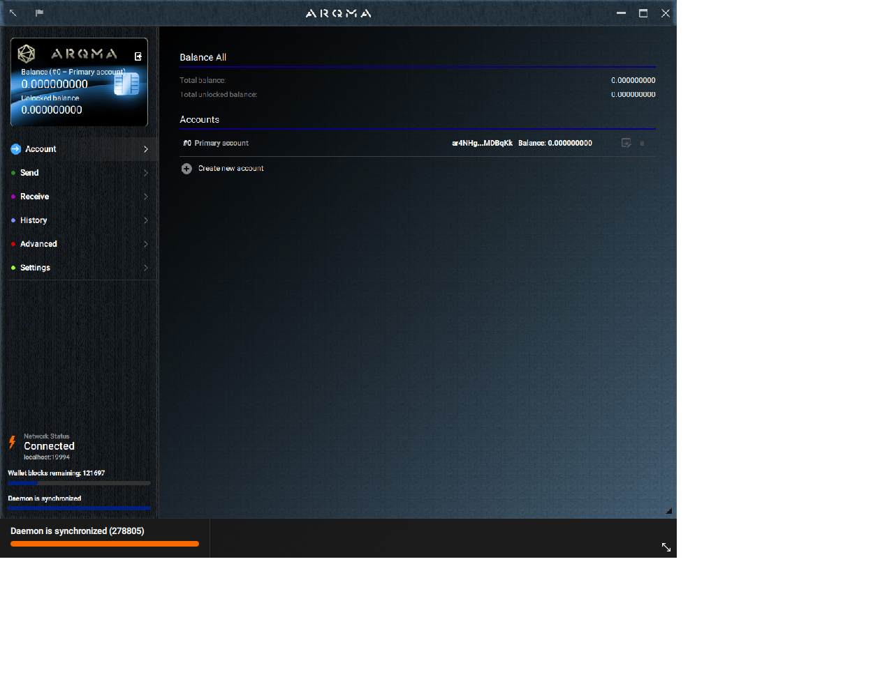
The Account tab provides tool to handle your different ArQmA accounts within your wallet.
Balance All: Let you see the sum of all your accounts balances, unlocked or not.
Accounts: This is the list of accounts already generated on your wallet.
Create new account: Click on this button to create a new account and set its optional label.
You can change the current account by simply clicking on it on the list.
Each of your accounts are filled with their own informations:
Label: A name or description of the account for convenience.
Address: The account primary address. Note: Primary account addresses and secondary account addresses have different heading numbers
Balance: The account total balance. It cumulates the main address and all subaddresses for this account. Note: Subaddresses are managend through the Send screen
Set Label: Click on this button to set this account label.
Copy Address: Click on this button to copy this account address to the clipboard
Send ArQmA
The Send tab provides tools for creating outgoing transactions.
Amount: This is how much ArQmA you want to send.
Transaction priority: This is the priority level your transaction will receive in the pool of transactions waiting to be confirmed. The more you pay, the higher your transactions priority for inclusion in a block. Currently staying with the default or the slow option is likely to get you into the next block.
Address: This is where you put the ArQmA address that you are sending to. Best practice is to copy and paste the address to prevent errors, accompanied with visually checking that the pasted address is correct.
Payment ID (optional): The payment ID is an identifier attached to the transaction you are about to send. Often when sending to an exchange they will give you a payment ID that you must include here. This is so they know which incoming transaction is from you. If you forget to add your payment ID you should still be able to recover your funds by contacting the party you sent ArQmA to. Long payment IDs are being deprecated. It is hidden by default. If you need to specify a long payment ID, you should enable it first on the Settings > Layout tab. You should encourage services to accept payments that need to be identified with unique subaddresses instead
Description (optional): This is for your record keeping. You can add some information regarding your transaction for future reference.
Sweep unmixable: This allows you to get rid of outputs in your wallet which have strange amounts like 0.000006839355. These are unmovable without combining them with another output. Most users will never need to use this feature.
Sign tx file: This button allows you to sign a transaction file that was created on a view-only wallet.
Export key images: This option will allow you to export your key images. They are needed to get the true balance of a view-only wallet.
Address Book
The Address Book tab lets you save addresses that you frequently transact with. This is a convenient place to copy addresses from when creating transactions.
Receive ArQmA
The Receive tab provides tools for generating subaddresses.
Addresses: This is a list of your primary address and subaddresses.
Create new address: This button allows you to create new subaddresses. You can create as many as you would like. Learn more about subaddresses.
Set Label: Click on this button to set this subaddress label.
QR code: This is a QR code that has your selected address embedded into it. It can be used as a way to give others your ArQmA address by scanning the code.
Save: Click here to save the QR code as a png image.
Copy: Click here to copy the QR code corresponding URL formated as *ArQmA:
Merchant view
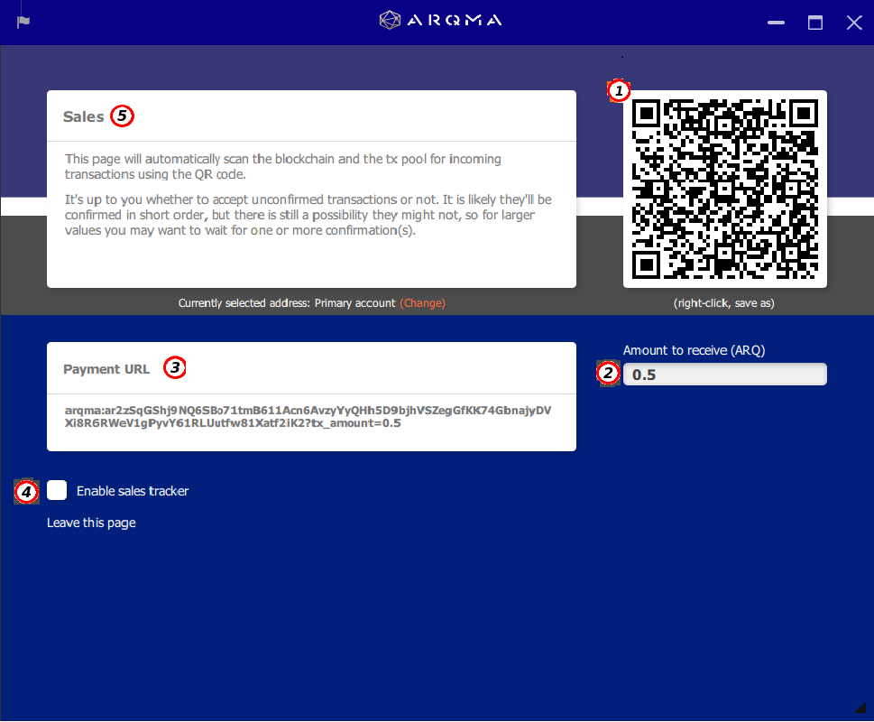
The Merchant view is intending to offer professionals a nice app on their points of sell. It let you craft payment requests, and monitor incoming transactions
QR code: This is a QR code that has your selected address, and optionally the amount, embedded into it. It can be used as a way to give others your ArQmA address by scanning the code.
Amount: This is for creating a payment request, enter the amount of ArQmA you would like to receive.
Payment URL: This is the URL corresponding to the address and amount you have chosen. It could be copied by clicking on it and sent to a customer.
Tracking: If you tick this box, you'll see a list of incoming transactions.
Incoming transaction: Those are the transaction currently seen on the blockchain and the transaction pool, with associated confirmations.
Transaction History
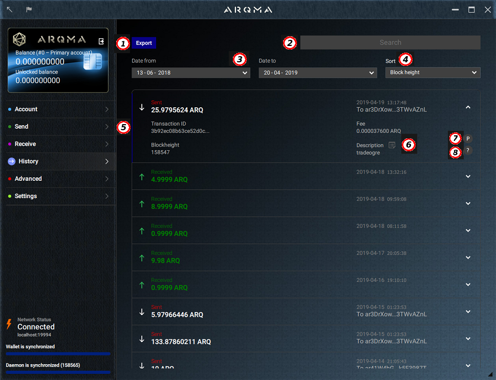
The History tab let you walk through the transactions sent and received on your account.
Export: This will create a CSV file of the record in a folder of your choice.
Search: Quickly find a transaction using any field to look up from.
Filters: You can choose to filter out the transaction between specific dates. This can be useful if your wallet has tons of transactions.
Sort: You can sort transaction by block height or date. Those methods are actually equivalent
Transaction list: Here are displayed your transactions on this account. Each transaction is displayed with it's informations: Amount, Tx ID, Height, Date, Fee (for outgoing transactions), and DescriptionOptional.
Set description: You can optionally click here to set a description of your choice to this transaction.
Prove transaction: Clicking here will generate a payment proof in case of a dispute. More details on proving payments can be found hereFor outgoing transaction only
Details: Clicking here will show you the transaction details: Tx ID, Address Label, Address, and Payment ID.
Advanced Features
Solo mining
The Mining tab provides a one click CPU miner that is embedded into the GUI.
CPU threads: Number of CPU threads to use for mining.
threads auto-configuration: Set automatically the number of threads either to the recommended number, or to the max number.
Background mining: Check this box to enable experimental background mining. This should allow you to use your computer normally while mining.
Start mining: Start the miner.
Stop mining: Stop the miner.
Status: Indicates the mining state and hashrate.
Prove - Check
The Prove/check tab provides tools for proving a payment or validating proof of a payment. This is necessary with ArQmA because these details are not available on the blockchain.
Prove Transaction
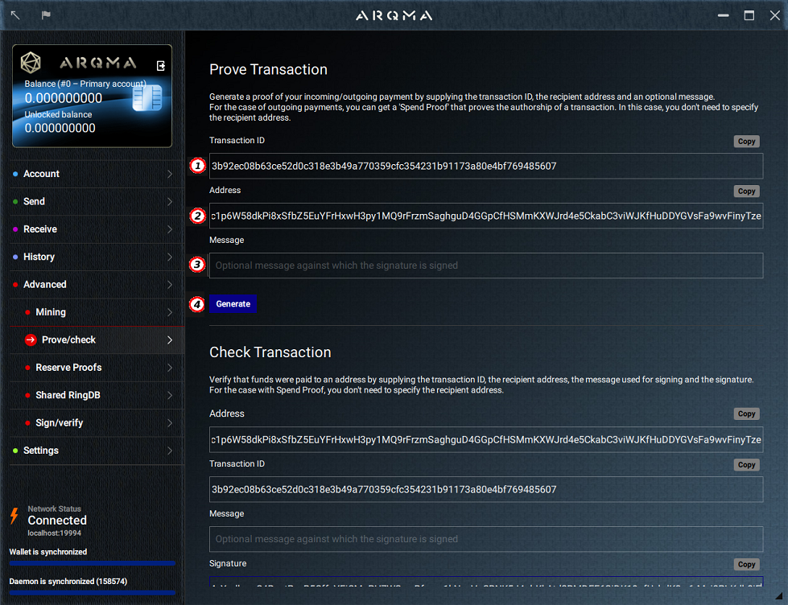
This will generate a proof that you made a payment to a certain address. You need to put the following information:
Transaction ID: This is the ID of the payment you are creating proof for. You can find the transaction details by selecting the History tab from the left menu.
Address: This is the address you are proving payment to.
Message (optional): This an optional message that will be signed with the transaction details. If you choose to include a message then the other party must also include the exact same message in order to verify your proof.
Generate: Click here once you've entered all the details to generate your proof.
This will verify that a payment was made. You need to put the following information:
Transaction ID: This is the ID of the payment you are attempting to verify.
Address: This is the receiving address of the payment you are attempting to verify.
Message (optional): This is the optional message that may have been included with the proof.
Signature: This is the signature generated to prove payment.
Check: Click here once you've entered all the details to check that the transaction proof is valid.
Shared RingDB
This is an advanced tool that can be used to improve the privacy of ring signatures. The outputs used in ring signatures can be adapted to mitigate the privacy loss when using a key-reusing fork or to avoid outputs that could not be spent in this transaction.
Mark as spent filename: This tool will mark outputs that are known to be spent. After running arqma-blockchain-mark-spent-outputs, import the resulting file to avoid using these outputs as decoys in constructed ring signatures. This file is stored in the .shared-ringdb folder by default.
Mark as spent output: This will mark or unmark as spent a chosen single output. Outputs are represented by 64-character strings. The outputs added in this field will not be used as decoys in constructed ring signatures. Unmarked outputs may (but will not necessarily) by used as decoys.
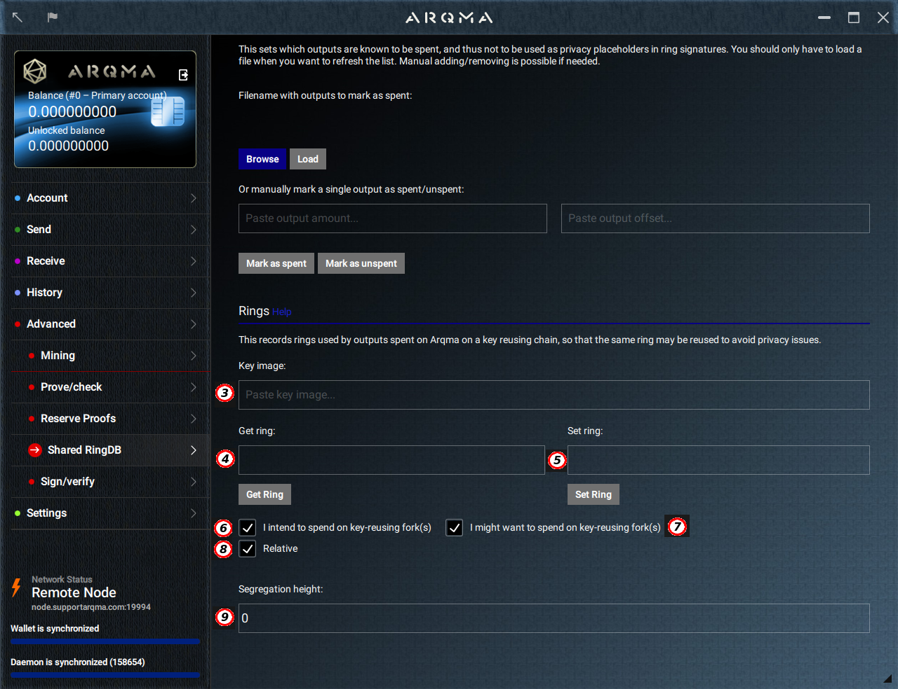
Key image input: Add the key image that was used on the key-reusing fork.
Get ring: Press the "Get Ring" button to get the ring members for the given key image in 3.
Set ring: Press the "Set Ring" button to set the ring members for a transaction. Copy the ring members from 4 to get those for the key image, or manually type in your own.
Intent to spend: Select this if you are certain that you will spend ArQmA on a key-reusing fork. This will aggressively modify the input selection algorithm to give you the greatest plausible deniability.
Possibility to spend: Select this if you may spend ArQmA on a key-reusing fork. This will modify the input selection algorithm. Uncheck this only if you are certain you will not use a key-reusing fork.
Relative: When selected, the offsets are encoded relative to the previous, as opposed to absolute (transactions use relative offsets).
Segregation height: The block height at which the key-reusing fork splits.
Sign - verify Message
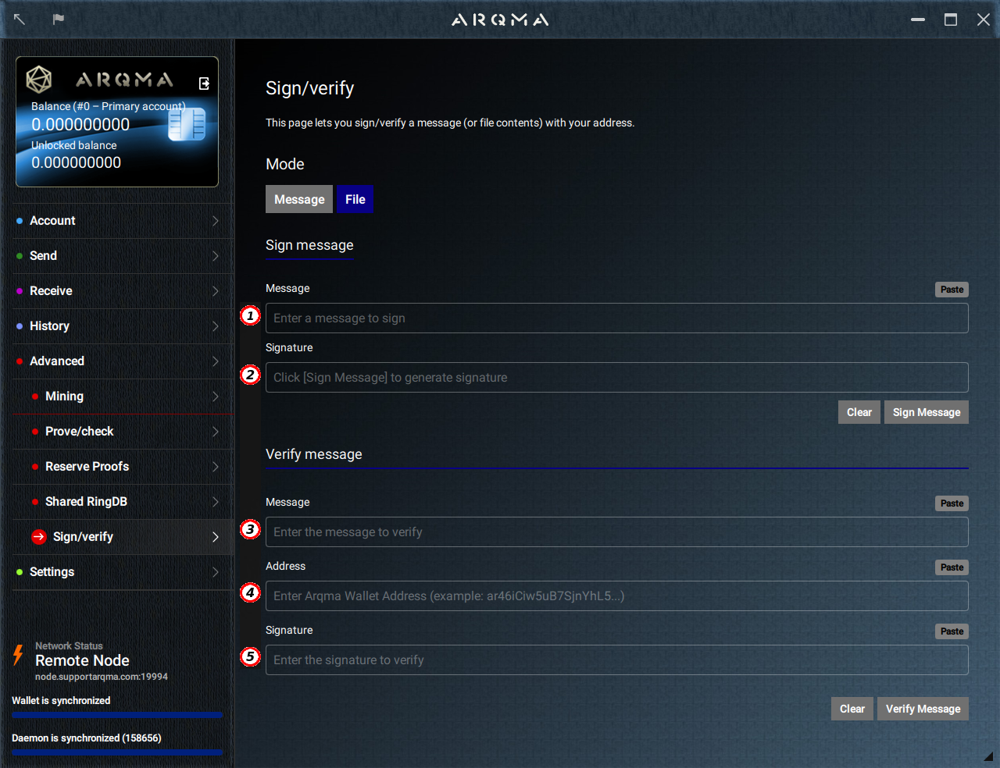
The Sign/verify tab provides tools for signing a message or file with your private key or verifying the authenticity of a singed message or file.
Sign
Message: This is where you can enter a message to be signed.
Signature: This is where your unique signature will appear once you click the Sign button. This is linked to your private key and the message you entered. It will be given as proof along with the message which was signed.
Verify
Verify message: This is where you will put a message that has been signed.
Address: This is where you will enter the public ArQmA address of the signer.
Signature: This is where you will enter the signature you are verifying. Once all the required information has been entered click the Verify button. A pop-up will tell you if the signature is valid.
Sign - verify File
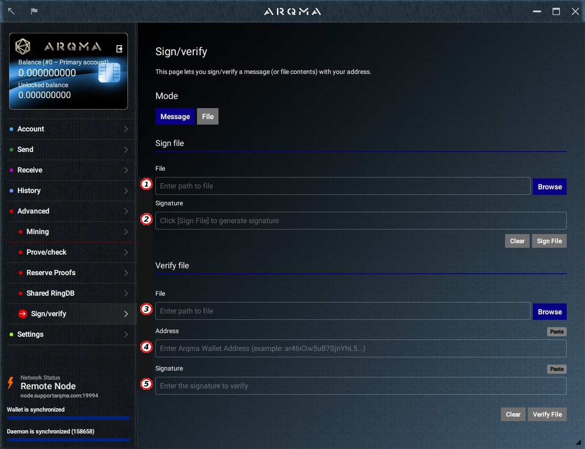
The Sign/verify tab provides tools for signing a message or file with your private key or verifying the authenticity of a singed message or file.
Sign
File: This is where you can choose a file to be signed. Click Browse to navigate the file system.
Signature: This is where your unique signature will appear once you click the Sign button. This is linked to your private key and the file you entered. It will be given as proof along with the file which was signed.
Verify
File: This is where you enter the path to a file that has been signed. Click Browse to navigate the file system.
Address: This is where you will enter the public ArQmA address of the signer.
Signature: This is where you will enter the signature you are verifying. Once all the required information has been entered click the Verify button. A pop-up will tell you if the signature is valid.
Settings
The Settings tab provides tools for customizing configuration options.
Wallet
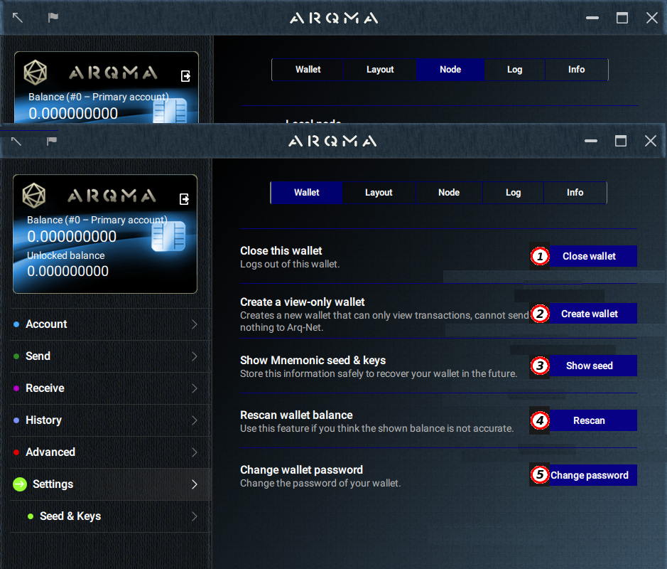
Close this wallet: Click here to safely close the current wallet
Create a view-only wallet: Click here to generate a view-only (or audit) wallet, which is capable to see existing outgoing transactions and all incoming transactions. See this user-guide for more information.
Show seed & keys: This button will redirect you to the Seed and keys tab.
Rescan wallet balance: Click here to rescan the blockchain for all the transaction. Note: You will lose any information not stored on the blockchain (this includes destination addresses, tx secret keys, tx notes, etc.)
Change wallet password: Click here to change your password.
Layout
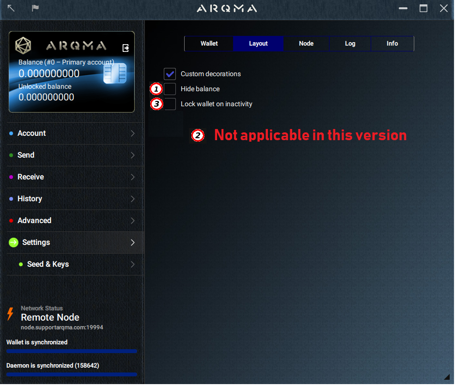
The layout tab is where you can adjust the settings of the GUI wallet. The most important options are: (0) Custom decorations. Unchecking this box will change the background texture and simple font display for faster a display screen. The screen will likely blink off, then back on with the new settings. (1) Hide balance: If you are running your wallet in public, you may want to hide its balance. This can be useful for point of sales systems.
(2) Enable Payment ID: Long payment IDs are disabled by default. Click here to enable it. This can be useful for transfers to exchanges that require a long payment ID such as Binance (at the time of writing). Using long payment IDs is detrimental to your privacy. Please ask services that still use this deprecated feature to use subaddresses instead.
(3) Lock wallet: Set this to automatically lock your wallet after N minutes of inactivity. This ensures no one is able to use your wallet while you are away from keyboard.
Local Node
Start/Stop Local Node: Depending on its current state, either start or stop the local node.
Blockchain location: Manually enter a non-default path to the blockchain, or click change to choose a new path.
Startup flags: When using a local node, this will be where you enter additional command line options.
Bootstrap Address: Enter the hostname or IP address of the bootstrap remote node. See section Bootstrap nodes for a brief explanation of what a bootstrap node is.
Bootstrap Port: Enter the port of the bootstrap remote node. The default trusted node is node.supportarqma.com port 19994 which will direct your GUI wallet to the nearest node on the ArQmA Network.
Address: Enter the hostname or IP address of the remote node.
Port: Enter the port of the remote node.
Daemon Username: enter a username in case authentication to the remote node is required.
Daemon Password: enter a password in case authentication to the remote node is required.
Trusted Daemon: By default, data requests to remote nodes are obfuscated, and this process requires more resources. If your remote node is under your control (i.e. a dedicated server of your own) you can mark it trusted so that data requests will not be obfuscated anymore (just like a local node).
Log
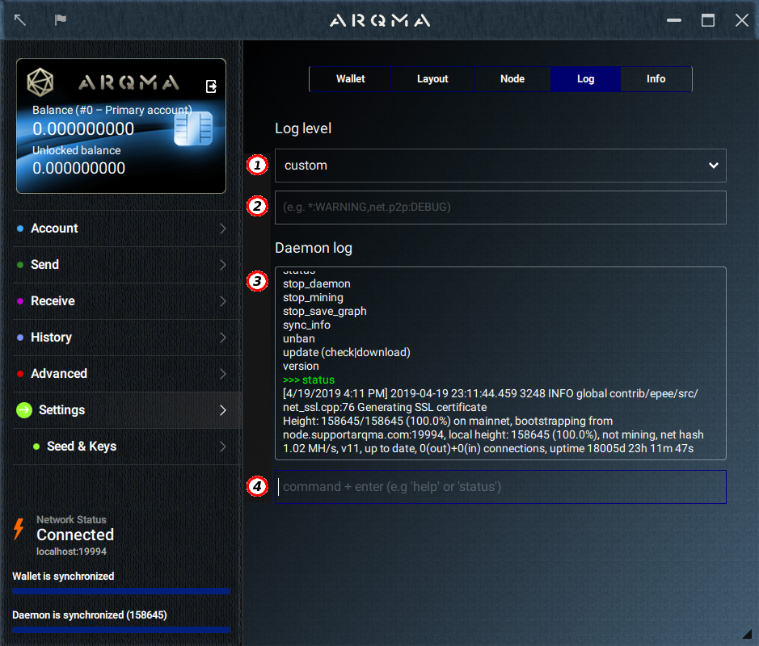
Log level: Change the verbosity of the debug logs.
Log categories: Add specific categories to the debug logs.
Daemon log: Real time output of the log.
Command line: Interact with the daemon.
Info
GUI Version: Version of the GUI wallet installed.
Embedded ArQmA Version: Version of the embedded daemon in use.
Wallet path: Where the wallet is located on your computer.
Wallet creation height: Change the block height that a wallet rescan will go back to.
Wallet log path: Where the logs for this wallet will be saved.
Wallet mode: Display the wallet mode chosen in the wizard.
Copy to clipboard: Copy all information to clipboard.
Seed and keys
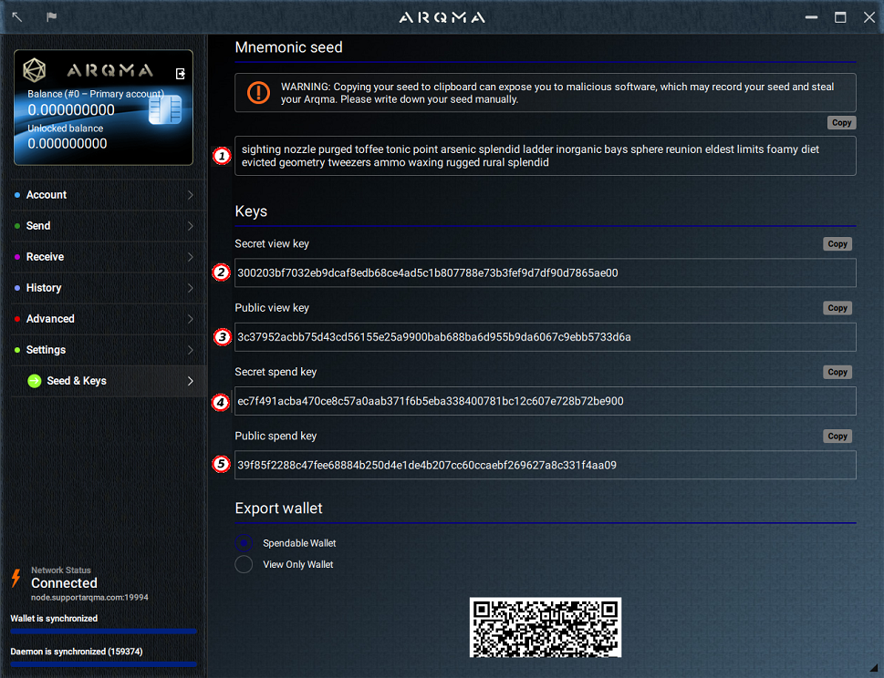
The Seeds & Keys tab displays your wallets mnemonic seed as well as your secret view key, public view key, secret spend key, and public spend key.
Mnemonic seed: DO NOT share your mnemonic seed with anyone. Store a copy securely. The mnemonic seed is a 25 word phrase that contains all the information needed to view and spend funds. There is no recovery process possible if you lose both your mnemonic seed phrase and your keys. Learn more about ArQmA mnemonic seeds.
Secret view key: Secret view keys allows the holder to view your wallets incoming transactions, but not outgoing. It is sometimes useful for auditing purposes to give your secret view key to a third party.
Public view key: The public view key is used for stealth address creation. Learn more about view keys.
Secret spend key: DO NOT share your secret spend key with anyone. The secret spend key is used to sign transactions and should be regarded with the same security as your mnemonic seed.
Public spend key: The public spend key is used by the network to verify the signature of the key image you generate when you make a transaction. This is what prevents double-spends as the network enforces the rule that a key image can be spent only once. Learn more about ArQmA spend keys.
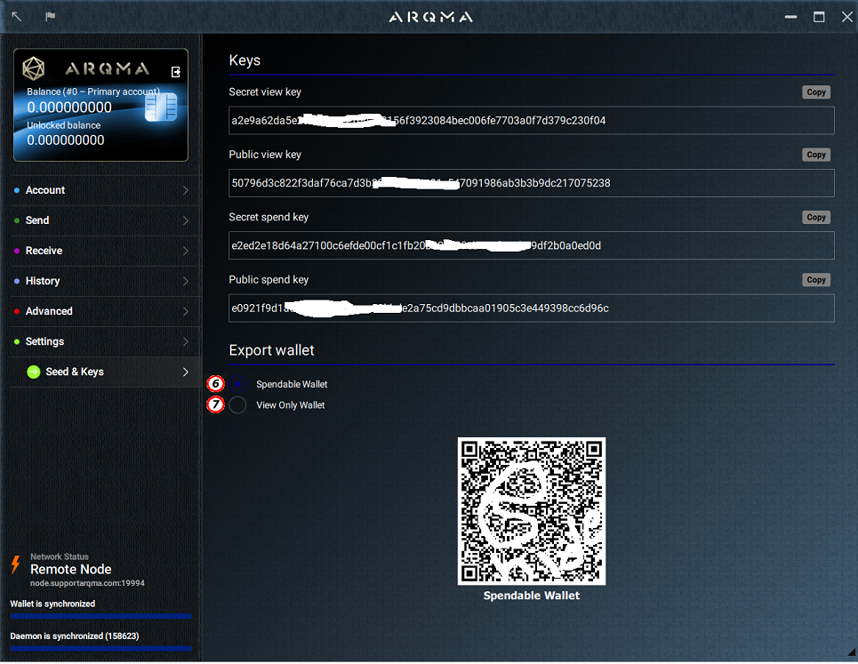
Export Spendable Wallet: DO NOT share your spendable wallet QR code with anyone. This can be used like a mnemonic seed for recovering your wallet. This creates a qrcode that contains all of your keys.
Export View Only Wallet: This creates a QR code that contains only the keys for viewing the transactions that this wallet sends or receives, but cannot create transactions.
Binaries Verification
Verify that the files you downloaded match the official ones. You can use this step-by-step guide with pictures (easy, for Windows user). Just use the ArQma signing key instead of fluffypony's key to verify the checksum/signing of ArQmA releases here: (https://github.com/arqma/arqma-gui/releases) You can see the SHA-256 keys each release per Operating System.
About remote nodes
Remote nodes are useful if you are not able/don't want to download the whole blockchain, but be advised that malicious remote nodes could compromise some privacy. They may track your IP address, track your "restore height" and associated block request data, and send you inaccurate information to learn more about transactions you make. Please make sure to use a node you trust (hopefully your own) and remain aware of these limitations. Users who prioritize privacy should use a full node instead. A number of trusted ArQmA open nodes are at node.supportarqma.com:19994 . Which is maintained by several auto global rollover IPs closest to your locality.
Bootstrap nodes
A bootstrap node is a remote node to use whilst also syncing the blockchain. This is different than the remote node setting, since it will only use the specified remote node until the blockchain is fully synced locally. It is a reasonable tradeoff for most people who care about privacy but also want the convenience of an automatic fallback option. Be aware that when using remote nodes (including with the bootstrap setting), nodes may track your IP address, track your "restore height" and associated block request data, and send you inaccurate information to learn more about transactions you make. Please make sure to use a node you trust (hopefully your own) and remain aware of these limitations. Keep the ArQmA full node software operating on your computer even when you are not using the wallet to reduce the amount of leaked data. Use the ArQmA trusted node at node.supportarqma.com:19994 .
You can always use the [ArQmA web wallet] : (https://myarqma.com) to view your balance, conduct transactions. Or, You can use the CLI wallet for your Operating System. Or, You can use the Android/iPhone ArQmA wallet from the GooglePlay App store.
Your blockchain local node copy is probably corrupted somehow. Remove it and redownload it. It's usually stored at C:directory or where you specified it. You can delete it and resync to the ArQmA Network. Or, alternatively for a quick, but possibly less privacy secure transaction, you can use a trusted remote-node like node.support.arqma.com:19994. See Node settings under "Settings", then "node" and fill in the remote node settings.
Remove and reinstall the GUI wallet application. You can also update the wallet application to the latest version overwriting the same directory that it was installed in with Windows.
My GUI feels buggy / freezes all the time Tip: Turn off mining on the wallet while using it if you have it enabled. Or free up a core for applications while using your external mining applicatin. You can temporarily disable mining by going to the "Advanced" option on the left and select "Mining" here:
**[I am using remote node, but the GUI still syncs blockchain? Connecting to the node from the GUI wallet After you enter your password for your wallet, you will see a pop up that will give you the option to "use custom settings". Click on it. You will then be sent to the "Settings > Node" page in the GUI. At this point you could choose 'Remote Node' see four text boxes labeled "Address", "Port", "Daemon username" and "Daemon password". Fill the address of the node that you want to connect to which is node.supportarqma.com port 19994. This address might look like node.supportarqma.com, or it could look like any old ip address. Then fill the "Port" box with the node's port. The default port is 19994. Optionnaly, fill the username and password if your remote note requires them. It is recommended by the developers for safety to just us node.supportarqma.com. Your screen should look a bit like this mode
I use a high resolution display and the GUI looks extremely small
This problem will be fixed soon, but there is a workaround for Windows: right click on ArQmA-wallet-gui.exe, select properties --> compatibility. you'll find a 'high DPI' option, change value there from "Application" to "System" or vice versa


{kind=link}